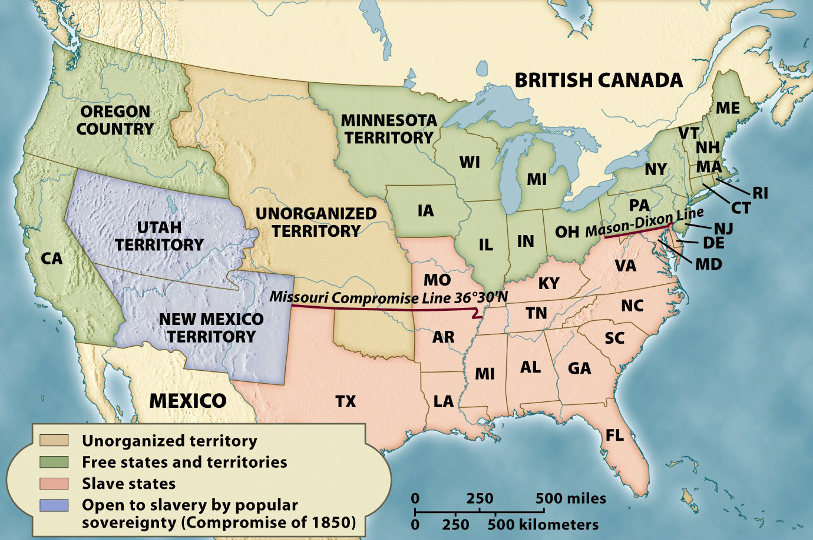

The Compromise of 1850

For 30 years, the status of slavery in newly-added states was governed by the Missouri
Compromise of 1820, which declared that (a) new states would enter in pairs, one slave and
one free, and (b) the dividing line between slave and free states (except for the slave
state of Missouri) would be the 36th parallel. The admission of California as a free state
in 1850 upset this compromise because (a) there was no slave state ready to join with it
and (b) it sits both above AND below the 36th parallel. This necessitated a new plan for
managing the future of slavery; the result was the Compromise of 1850. The Compromise of
1850 admitted California as a free state and introduced a new approach to slavery called
'popular sovereignty': Allowing the citizens of new states to decide for themselves
whether to have slavery or not. In 1850, this new approach was applied only to the distant
and largely empty territories of Utah and New Mexico. It would be expanded to all new
territories with the Kansas-Nebraska Act of 1854, and would be put to its first test (with
disastrous results) in the territory of Kansas in 1856.
Note: Click on the image for a larger version.
Source: Eric Foner, Give Me Liberty! An American History (New York: W. W. Norton & Company, 2008).
|

{kind=link}